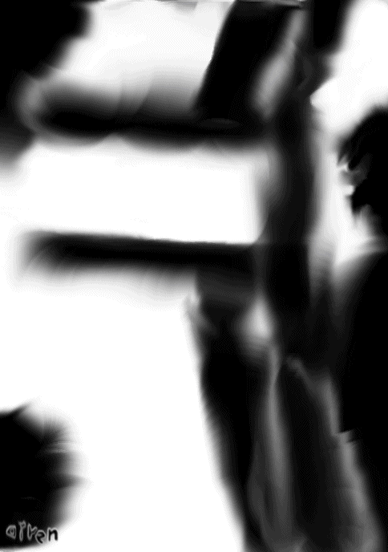
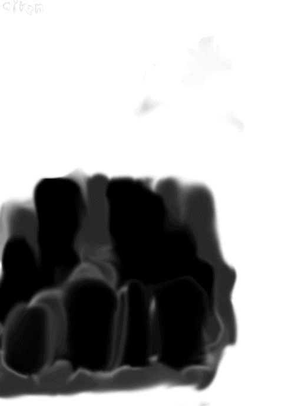
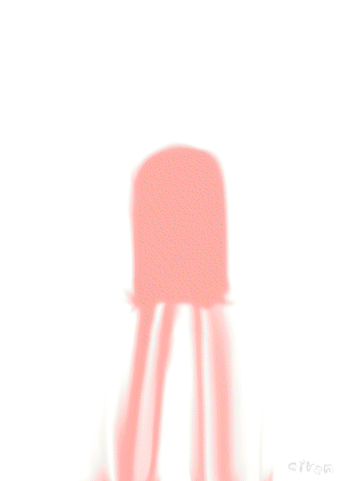

| ＺＩ・涙・エクスクラメーションマーク！ Ｗカード・双札・画集 | |
| オイレン（ハンドルネーム） | |
| (2019) | |
画集表紙 ＺＩ・涙・エクスクラメーションマーク！
画集第二段です、この表紙いかがでしょうか、インパクトを狙ってみましたのですが、
毎度毎度、インパクトを狙って、画力は置き去り状態です、ああ、
そんな私でも許していただけるのであれば、ぜひぜひ、この先も楽しんでみてください、
それでは、目くるめく絵の世界に、いざないましょう
題・ＺⅠＲＡⅠ ～１００の死闘（ワンハンドレット）表紙
シンプルに円形状の地雷のみを描いたものとなっていります、
手抜きですって？ハハハ、白黒のシンプルな絵が人の心を撃つことも時にあるのですよ
題・手に取った箱の中の地雷
ＺⅠＲＡⅠ ～１００の死闘（ワンハンドレット）１
両手にとった物は地雷、に見えますかね、
この時点では主人公がどういう存在なのかは明かしていなかったはず、
そういうミステリアスな部分も楽しんでほしいですね
題・遠くに見える廃墟？
ＺⅠＲＡⅠ ～１００の死闘（ワンハンドレット）２
遠くに見える廃墟のような物、
？が付いているのは島に来たばかりで本当にそうなのか判別できないからでしょうね
題・建物と落雷
ＺⅠＲＡⅠ ～１００の死闘（ワンハンドレット）３
建物に雷くらいが落ちている図です、
なぜ雷が落ちているのかは、本文を読んで確認して見てください
題・ジライガーの影
ＺⅠＲＡⅠ ～１００の死闘（ワンハンドレット）４
建物に雷くらいが落ちている図です、
なぜ雷が落ちているのかは、本文を読んで確認して見てください
題・ガラムイメージ 未稿
ＺⅠＲＡⅠ ～１００の死闘（ワンハンドレット）５
あくまでイメージですと言いたげな題です、
ま、イメージか影なのでしょう、真っ黒ですし、本文からしてみればとてもそうは思えないのですが
題・ズッコケイメージ
ＺⅠＲＡⅠ ～１００の死闘（ワンハンドレット）５
こちらもイメージ・・・らしいのですが、
えらく豪快にずっこけたなぁ、という感じもします
題・遺跡の扉？
ＺⅠＲＡⅠ ～１００の死闘（ワンハンドレット）６
？が付いてますが、一応遺跡の扉ですよ、
とはいえ、遺跡と呼べるほどに古いイメージでもないのですが、
一応、定義では遺跡です
題・コイン状の地雷
ＺⅠＲＡⅠ ～１００の死闘（ワンハンドレット）７
今度は別パターンの地雷です、とはいえ、人によっては同じに見えるかもしれない、
本文中ではきっちり差異を着けております、気になる方はそちらの方に・・・
題・雪山の入り口と少年
ＺⅠＲＡⅠ ～１００の死闘（ワンハンドレット）８
雪山といえば白、吹雪、そしてその向こうに立ちはだかる謎の影、
本文中ではこの人しかいないという勢いでしたよ、ええ
題・出口と一条の光
ＺⅠＲＡⅠ ～１００の死闘（ワンハンドレット）１０

必至になって逃げてようやく発射される光から逃げ切った時の一幕、
こんな時、安堵しない人はいますまい
題・空に去りゆく地上絵鳥
ＺⅠＲＡⅠ ～１００の死闘（ワンハンドレット）１１
見上げる視点で地上絵の鳥が飛んでゆくのを描いた絵です、
差し込む光も相まって実に雄大な一絵だと思いませんか？
題・黒い球体、ブラックホールボム
ＺⅠＲＡⅠ ～１００の死闘（ワンハンドレット）１２
突如発生したブラックホールに逃げる主人公と吸い込まれる人々を描いた絵です、
誰かの伸ばす手が実に恐怖をあおります
題・爆発エフェクト地雷０１
ＺⅠＲＡⅠ ～１００の死闘（ワンハンドレット）１２
０１て書いてるけど０２は無いと思います、
勢いよく地面より吹き上げる爆発、迫力ある一品です
題・ガラム移動
ＺⅠＲＡⅠ ～１００の死闘（ワンハンドレット）１４
ただ体を横にずらしてる感じの絵です、
意味は・・・ここでは書きません
題・見上げれば風の渦、サイクロンボム！！
ＺⅠＲＡⅠ ～１００の死闘（ワンハンドレット）１５

立ち上る風、まるで竜巻のようです、
クライマックスの一幕です
題・コンクリートの部屋
ＺⅠＲＡⅠ ～１００の死闘（ワンハンドレット）１６
何が起こったのかここはどこなのか振り出しに戻ってしまったのか、
その結末はぜひ自分の目で確かめてください
題・星間戦争編 青星民の涙表紙
黒い背景にロボットの半身がある、というイメージ、
青いゴーグルにフレーム、さてこのロボットは・・・？
題・宇宙空間に飛ぶ者
星間戦争編 青星民の涙１
星空です、宇宙戦争幕開けにふさわしい星空、
ここからどう物語が展開していくのでしょうか
題・病院の天井
星間戦争編 青星民の涙２
病院の天井です、歪んでいます、
これには理由があるのですが・・・
題・大きな倉庫シンリーの影
星間戦争編 青星民の涙３
一応主役機の影です、この後・・・
題・地上での爆発イメージ
星間戦争編 青星民の涙４
爆発イメージその２です、０２ではないです、
連続する爆発が音まで想起させるような逸品です
題・卵型シミュレーター
星間戦争編 青星民の涙５
訓練用の操縦シミュレーターです、
シュミレーションではありません、シミュレーターです
題・パソコンの画面？
星間戦争編 青星民の涙６
？ついてるけど紛うこと無きパソコンの画面です、
ここから何が映されるのか・・・
題・ノーパソ
星間戦争編 青星民の涙７
翻ってノートパソコンです、
これから開けるところですよ、ええ、いったい、何を見るつもりなのでしょうか・・・
題・スターシンリー
星間戦争編 青星民の涙８
実はこの題の後に・・・だと思うと付きます
主役機で気合を込めて書いたつもりなのですがいかんせん腕に不安を覚えます
題・部屋の中
星間戦争編 青星民の涙９
題がシンプルなのに反してきっちりと描き込んであります、
この空間を味わってもらえれば幸いです
題・イヤホン付きの携帯端末
星間戦争編 青星民の涙１０
いわゆるスマホというやつです、未来の宇宙時代でも普及しているのかは不明ですが、
作中ではとりあえず、イヤホン付きで採用しています、現代にあるものと同じだとは思えませんが・・・
題・シャトルＡ
星間戦争編 青星民の涙１１
なぜＡと付いてるのかいまだに思い出せない、Ｂは無いし、
単なる番号付か何かだったか・・・？
題・突き飛ばす人
星間戦争編 青星民の涙１２
とある一幕を白と黒で書いたもの、
この突き飛ばしが、彼らの運命を決めた、ように見えて・・・
題・シャッター街と人影二つ
星間戦争編 青星民の涙１３
人影と書いたが一方は宇宙人です、
あ、宇宙人も人ってつくから人影としてはあってるか、
過去から未来を、一体何を話すのか・・・
題・小惑星と筒状コロニー
星間戦争編 青星民の涙１４
小惑星漂う中で中心に筒状のコロニーがある小惑星があるという構図です、
小惑星の台座に横に置かれたようなコロニーで、一体何があったのか・・・
題・白い映画
星間戦争編 青星民の涙１５
映画館とそのスクリーンです、
手抜きに見える？はっはっはっ、まだまだ修行が足りませんなぁ
題・プレラスの影
星間戦争編 青星民の涙１６
プレラスという人物の影です、
彼は主人公と何を語るのか・・・
題・二つの楕円の宇宙船
星間戦争編 青星民の涙１７
対比するように二つの宇宙船が存在しています、
黒い方が敵、白い方が味方に見えます
題・電気店内装
星間戦争編 青星民の涙１８
とある電気店の内装です、レジから商品からゲームソフトまで見えます、
主人公の普段を映したシーンの物で、右上に見える物は束ねたコードです
題・敬礼遺影
星間戦争編 青星民の涙１９
誰かが敬礼しています、
遺影と書いてあるのははっきり言ってネタバレです
題・砂嵐
星間戦争編 青星民の涙２０
通常の砂嵐ではなく通信が途切れた時に出る白黒のザァーッってなってるあれです、
なぜなっているのかは、見ていればわかりますね・・・
題・墓標
星間戦争編 青星民の涙２１
そして決定打となる墓標、
誰が埋まっているかは・・・
題・銃口の先
星間戦争編 青星民の涙２２

ええ、銃口の先、それ以外の何でもありません、
その先にあるものは、この銃口は一体何を狙っているのか・・・
題・巨大機と多首竜機
星間戦争編 青星民の涙２３
見えにくいかもしれませんが、中央に多首竜機がいます、
この二体を相手に、主人公は勝てるのでしょうか・・・
題・街をのぞむ二人
星間戦争編 青星民の涙２４

二人と書いてあるが人影は見えません、あるのは街のみ、
ええ、街ですよ、別にこんにゃくを乱立させてるわけではありません、決して
題・宇宙船の前・・・
星間戦争編 青星民の涙２５
宇宙船に入り、どこかに行こうというところ、
さて、この宇宙船は一体どこに彼らを運んで行くというのでしょう・・・
題・恋愛小説編！！（エクスクラメーションマーク！）表紙
たくさんの桜の花びらが風に乗っている様を描いたものです、
今回は２パターン必要ということで帯ありと帯無しを作りました
題・スマートフォン
恋愛小説編！！（エクスクラメーションマーク！）１
いわゆるスマホです、赤い花の型を押すことで華やかさを演出、
ピンクの色彩は恋愛や生命のイメージが強いためこの小説にふさわしいと思い採用しています
題・目の前の空白の座席
恋愛小説編！！（エクスクラメーションマーク！）２
教室の席に座った正面です、
さて、目の前の席には誰が座るのでしょう・・・
題・嵐の予感・・・
恋愛小説編！！（エクスクラメーションマーク！）３
嵐が巻き起こる・・・
っていうか、この絵だと既に嵐が巻き起こっててもおかしくないですね・・・
題・窓際と校庭
恋愛小説編！！（エクスクラメーションマーク！）４
窓際から校舎を覗いた、ではなく、窓際と校舎をまとめて描いた絵です、
おや、校庭に何人か人がいますね、何をしているのでしょう・・・？
題・水滴
恋愛小説編！！（エクスクラメーションマーク！）５
水滴です、紛うこと無き水滴、実物の水滴というより水滴マークっぽいですね、
元々、黒色だったものをピンクにしています、統一感のためですが、案外これで良かったのではと考えています
題・教室の扉
恋愛小説編！！（エクスクラメーションマーク！）６
教室に付いた扉、だから何？と言われればそれまでですが、
一応、向こうの廊下まで描いています
題・氷のレール？
恋愛小説編！！（エクスクラメーションマーク！）７
ピンク色ですが氷のレールです、少し色味が違っちゃったかな？
主人公たちはこのレールに幾度も助けられることになります、誰が生成しているのかは最後まで語られませんが・・・
題・見上げる山中の星空
恋愛小説編！！（エクスクラメーションマーク！）８
星空です、
ここでの一場面が書いていた時から印象的で帯にもここの事を少し強調さえてもらいました
題・弁当箱ふた付き
恋愛小説編！！（エクスクラメーションマーク！）９
今度はここのマークがとても印象的でした、
何かに再利用しようかな・・・
題・秋祭りかな？
恋愛小説編！！（エクスクラメーションマーク！）１０

かな？などと付いていますが、やはり、秋祭りです、
人がいないのは描いたときに忘れていたから
題・表に黒馬陰に白馬
黒馬と白馬です、
黒馬の方を主人公が乗ります、理由？本文に書いてますよ
題・モミの木、クリスマスバージョン
恋愛小説編！！（エクスクラメーションマーク！）１２
題の通り、というかそれ以上は無いですね、
このそばでクリスマスパーティが行われています
題・扉とレール
恋愛小説編！！（エクスクラメーションマーク！）１３

なんだろこれ？とか思うかもしれませんがレールとその先の出入り口です、扉は多分ついてません、
今更ながらに色を逆転させといたほうがいいかな、とか思ってしまいました・・・
題・ハート
恋愛小説編！！（エクスクラメーションマーク！）１４
ハートです、横向きなのは９時方向を表しています、
つまり、もうすぐ成就する（かもしれない）から苦しくても頑張ってね、とかそういう意味合いだったりします
題・天空でのたくさんの爆発
恋愛小説編！！（エクスクラメーションマーク！）１５
祝福ではなくたくさんの爆発、
いったい、この物語の裏で何が起こっているのでしょう・・・
後書き
いかがだっただろうか、二つ目の画集は、色々腕が足りていなくて申し訳ない、
やはり、ネタバレも多く、ところどころに出る本文はその為である、
楽しんでいただければ幸いだが、やはり、出来れば元となっている小説達も買ってくれれば幸いだ、
それでは、次の機会にＺ・・
目次